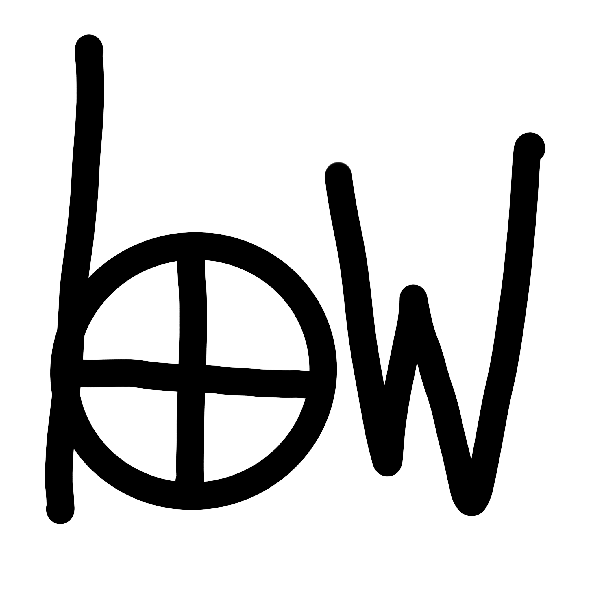

bitwise by makxyak
circuits
/
databases
new tab
duplicate circuit tab
reset reference
open
save
screenshot view
export png
add:
A
input
R
output
not
and
or
nand
nor
xor
xnor
add:
entity
relationship
attribute
key attribute
generalisation
table
schema text
er → relational
examples…
nested relationships
eer constructs
bank schema (tables)
truth table
duplicate circuit here
grid: off
center
clear
truth table
pure white screenshot mode
exit (esc)
quick insert at cursor
A
input
R
output
not gate
and gate
or gate
nand gate
nor gate
xor gate
quick insert at cursor
entity
relationship
attribute
key attribute
generalisation
table
schema text
wire:
drag from output pin (right) to input pin or gate body
•
adjust wire bend:
drag any vertical wire segment left/right
•
pan/zoom:
middle-drag or space+drag / scroll wheel
•
quick add:
double-click empty canvas
−
100%
+
action completed